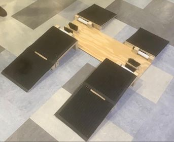
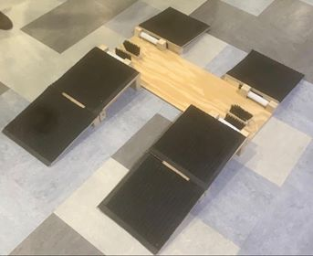

University of Waterloo Course Project

Source: Inaara Ahmed-Fazal
University of Waterloo Biomechantronics Team
Source: Facebook
University of Waterloo Course Project

Source: Inaara Ahmed-Fazal
|
Wheelchair Cleaning Device
University of Waterloo Course Project  Source: Inaara Ahmed-Fazal |
As part of a Biomedical Design course, I worked on a team to design a solution for wheelchair-users who faced difficulty in cleaning their wheelchair wheels during the transition from an outdoor to an indoor space. We documented our use of the Iterative Design Process through numerous deliverables and reports, and created multiple mechanical prototypes to test the design and showcase it in several presentations. |
| This BioTron team has been working on the second iteration of a battery-powered prosthetic arm for a double amputee living in El Salvador. This prosthetic involves a 3D-printed body designed on SolidWorks, a PCB designed using Autodesk Eagle, and a linear actuator. We hope to continue with this project when the University partially reopens in the fall. |
Daniel's Arm
University of Waterloo Biomechantronics Team Source: Facebook |
|
3D-Printed Puzzle
University of Waterloo Course Project
Source: Inaara Ahmed-Fazal |
In a Computer-Aided Design course, I collaborated with team members to design, create and showcase a 3D-printed puzzle. I used the SolidWorks CAD software to create an individual piece of the puzzle using a range of features including lofting, shelling and scaling. I then worked with my team to create an assembly of our respective parts in SolidWorks, and test their ranges of motion, before 3D-printing them. |